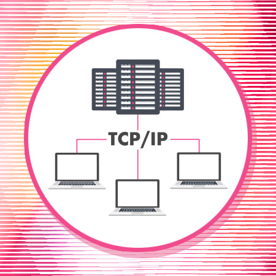

Transmission Control Protocol/Internet Protocol (TCP/IP)

TCP/IP (Transmission Control Protocol/Internet Protocol) is the fundamental communication protocol suite that enables devices to connect and communicate over the Internet and most modern networks. It was developed in the 1970s by Vint Cerf and Bob Kahn and became the standard for ARPANET, the precursor to the Internet.
Layered Architecture
- Application Layer: Protocols like HTTP, FTP, SMTP, DNS.
- Transport Layer: TCP (reliable, connection-oriented), UDP (faster, connectionless).
- Internet Layer: IP (addressing and routing), ICMP, ARP.
- Network Access Layer: Handles physical transmission (Ethernet, Wi-Fi).
Key Protocols
- TCP: Ensures reliable, ordered delivery of data between applications.
- IP: Handles addressing and routing of packets across networks.
- UDP: Used for applications needing speed over reliability (e.g., streaming, gaming).
Use Cases
- Web browsing, email, file transfer, streaming, online gaming, VoIP.
- Enables the Internet, intranets, and most private networks.
Security Considerations
- TCP/IP was not designed with security in mind; encryption and authentication are added by higher-level protocols (e.g., HTTPS, SSH).
- Vulnerable to attacks like IP spoofing, packet sniffing, and DDoS.
Fun Fact
Every device on the Internet uses a unique IP address, either IPv4 (e.g., 192.168.1.1) or IPv6 (e.g., 2001:0db8::1).